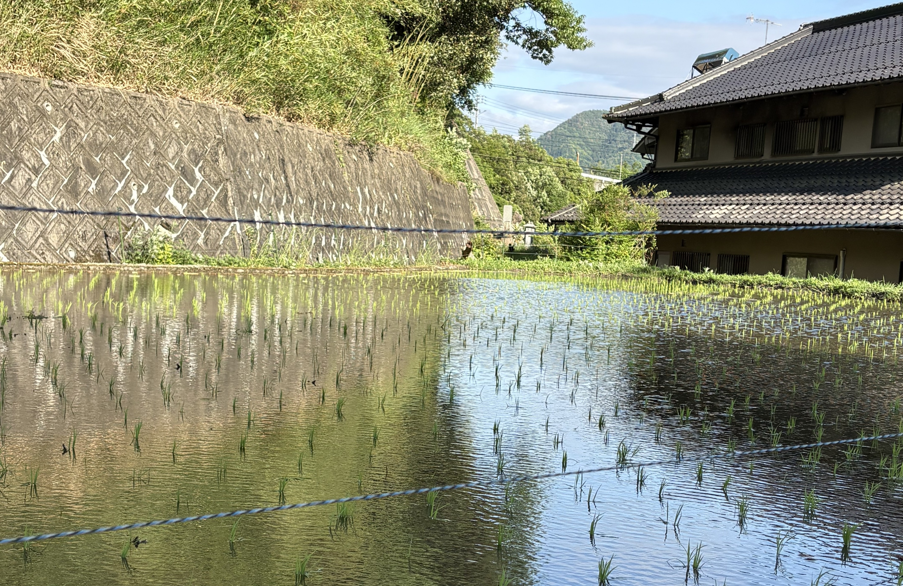
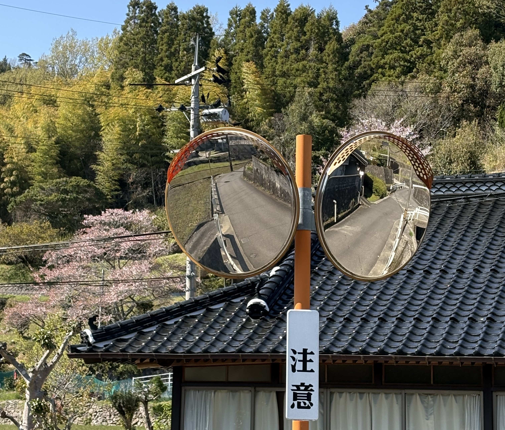

- トップ >
- 徒歩日記
徒歩日記
どんな目的で歩いたのか写真とともに紹介いたします。
登下校

季節を感じる一枚。田植えの季節になると、水面に反射する山や光が美しいなと感じられます。
散歩

散歩で少し遠出をしたので一枚。私はこの道を歩くことが好きです。T字路とも言えず、Y字路とも言えない何とも不思議な細い道を抜けた先にカーブミラーがあるのですが、少し懐かしい気持ちになるのです。
お出かけ

廃線になった駅で一枚。年数がたつにつれて錆が出てきたりとノスタルジックな場所になっております。